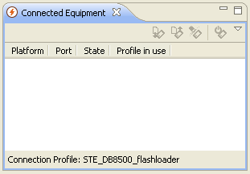
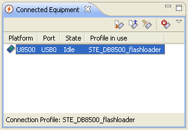
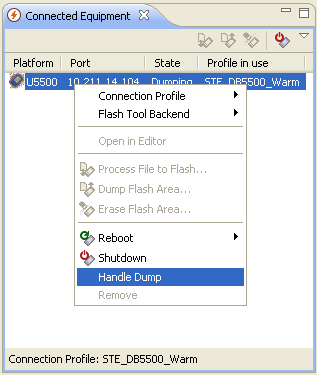

The following figure show the connected equipment view. The view does not display any connected equipment and no buttons are enabled. The bottom of the connected view displays the current connection profile ("<none>" is displayed if missing configuration or no connection profile set.
If a mobile equipment is connected it will look like the following figure:
With a connected equipment in a "no error" state it is possible to execute commands. Commands can be reached from a number of different menus or toolbar. By right-clicking on the equipment row a menu appears like below:

With a connected equipment in a "Dumping" state it is possible to download and delete dump files from equipment. By right-clicking on the equipment row a menu appears like below:
